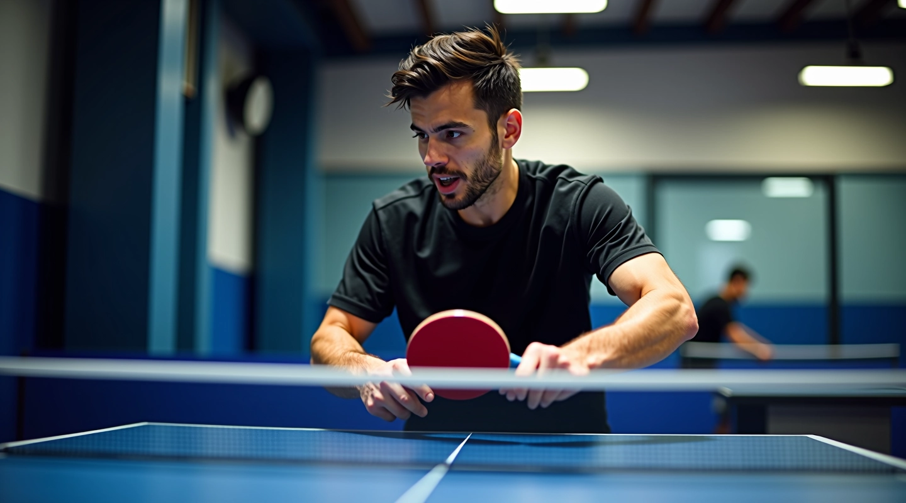
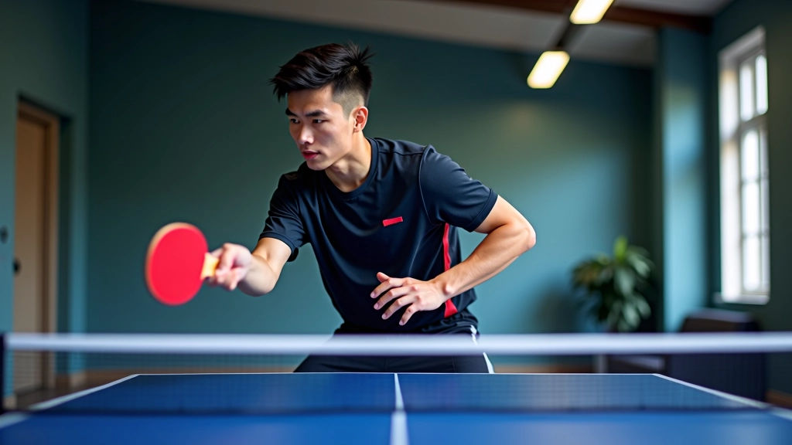
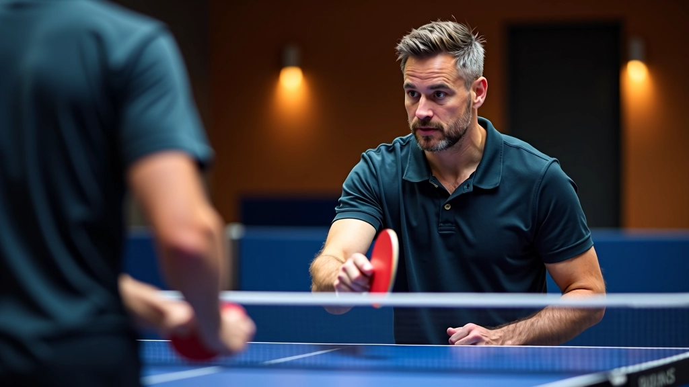

أساسيات القطع الدفاعي للمبتدئين
شرح مفصل لمبادئ القطع الدفاعي، موضع القدمين، حركة الذراع، والتوقيت الصحيح لبدء الرد على الكرات السريعة.
اقرأ المزيدبرنامج تدريبي مجرب يتضمن تمارين عملية وحركات متكررة لتطوير مهارات القطع الدفاعي بسرعة وكفاءة. تعلم التقنيات الأساسية التي يستخدمها لاعبون محترفون في النوادي المتخصصة.

البرنامج التدريبي الذي تعرضه لك هنا نتاج سنوات من الخبرة العملية في نادي الشمس. يجمع بين تمارين موجهة للمبتدئين وتقنيات متقدمة تناسب جميع المستويات. والفكرة الأساسية بسيطة: التكرار المنتظم يبني العضلات والذاكرة الحركية.
لا تتوقع نتائج بين عشية وضحاها. لكن إذا التزمت بهذه التمارين لمدة ستة أسابيع، ستلاحظ فرقاً واضحاً في قوتك وتحكمك بالكرة. معظم اللاعبين يشعرون بتحسن ملحوظ بعد 15 جلسة تدريب متتالية.
البداية الصحيحة لكل لاعب
الخمس تمارين اللي بتقول عليها دي هي أساس البرنامج كله. كل تمرين تركز على جزء معين من الحركة — من الوقفة الصحيحة إلى إنهاء الضربة. والفكرة إنك تقدر تقسم التمرين الكامل إلى أجزاء صغيرة وتركز على كل جزء لوحده.

هذه التمارين مصممة لأغراض تعليمية وتدريبية. إذا كنت تعاني من إصابة أو ألم في الكتف أو الذراع، استشر مدرب متخصص قبل البدء. التقدم في الرياضة يحتاج الصبر والالتزام — لا تسعَ للسرعة على حساب السلامة.

البرنامج منقسم إلى أربع مراحل تمتد على 8 أسابيع. كل مرحلة تضيف تعقيد أكثر وسرعة أعلى للتمارين.
بعد سنين من التدريب في النادي، لاحظنا حاجات معينة تخليك تتقدم أسرع من غيرك. أولاً، التركيز على جودة التمرين مش الكمية. تمرين واحد بشكل صحيح أحسن من عشر تمارين بشكل سيء. ثانياً، استرح كويس بين التمارين — العضلات تنمو أثناء الراحة، مش أثناء التمرين.
ثالثاً، سجل تقدمك. خذ ملاحظات عن عدد الضربات اللي عملتها صح في كل جلسة. ستلاحظ بعد أسابيع إن الأرقام بتزيد. وأخيراً، لا تقارن نفسك باللاعبين الآخرين. كل واحد له سرعة تطوره الخاصة. أنت تنافس نفسك بالأمس، مش تنافس اللاعب الآخر اليوم.
برنامج التمارين اللي شرحناه اليك مش بيحتاج معدات غالية ولا نادي فخم. كل اللي تحتاجه هو مضرب، طاولة، وكرات، والتزام بالممارسة المنتظمة. ابدأ بالتمارين الأساسية، اتبع الخطة التدريجية، وركز على جودة الحركة مش السرعة.
القطع الدفاعي مش تقنية يسهل تعلمها بسرعة. لكن مع الممارسة والصبر، يصير عندك أداة قوية في لعبتك. لاعبون كتير بدأوا بنفس التمارين اللي موجودة هنا وصاروا يلعبوا على مستوى عالي. أنت كمان تقدر تفعل نفس الشيء.
تريد معرفة المزيد عن تقنيات القطع الدفاعي المتقدمة؟
اقرأ الاستراتيجيات المتقدمةتعمق أكثر في تقنيات القطع الدفاعي

شرح مفصل لمبادئ القطع الدفاعي، موضع القدمين، حركة الذراع، والتوقيت الصحيح لبدء الرد على الكرات السريعة.
اقرأ المزيد
كيفية ضبط زاوية المضرب بشكل صحيح لإنتاج دوران قوي في القطع الدفاعي، مع تقنيات متقدمة للتحكم بالكرة.
اقرأ المزيد
تقنيات متقدمة للاعبين المتمرسين، تشمل الدمج مع حركات أخرى والرد على الهجمات القوية بكفاءة عالية.
اقرأ المزيد